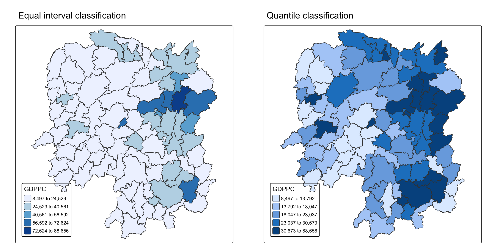
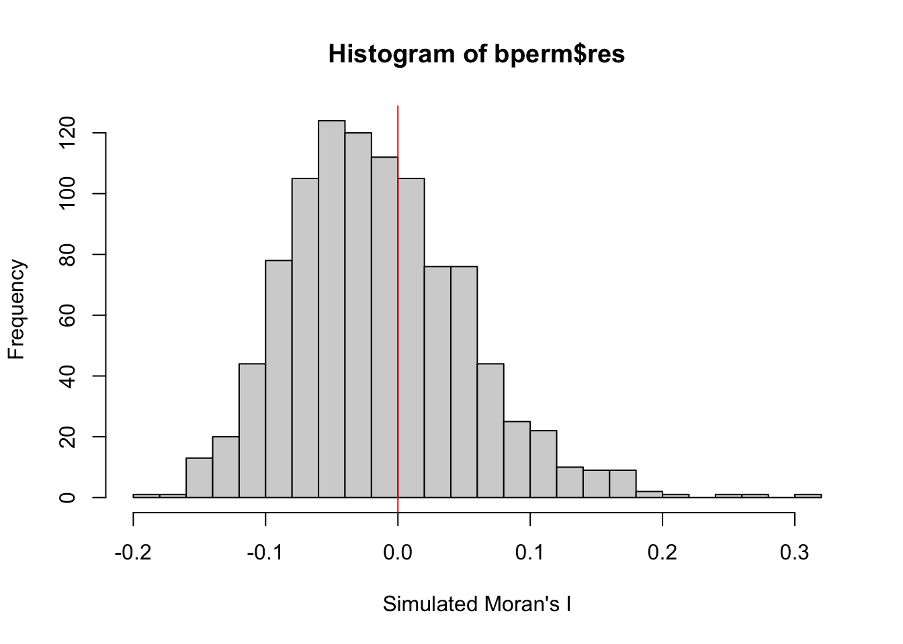
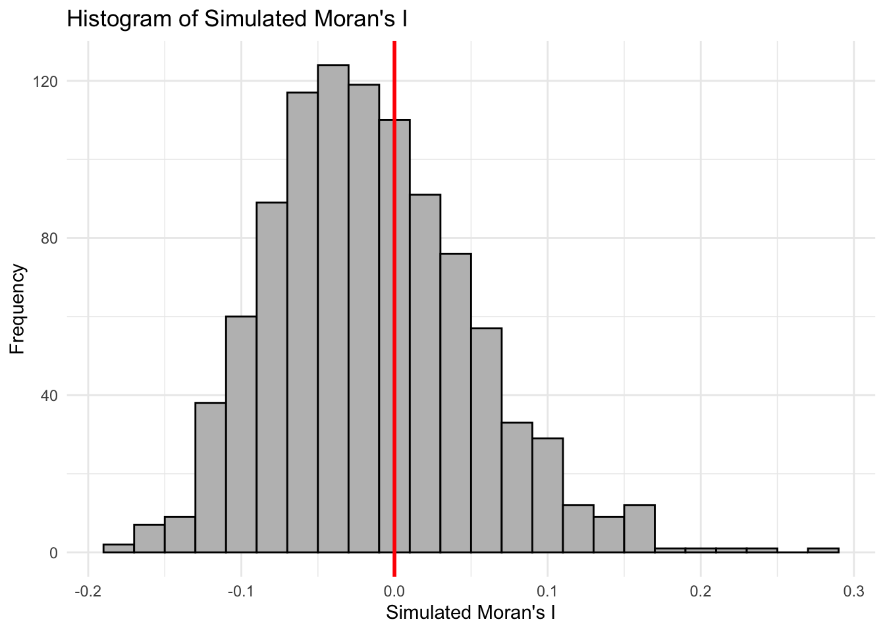

pacman::p_load(sf, spdep, tmap, tidyverse)Hands-on Exercise 5
9 Global Measures of Spatial Autocorrelation
This hands-on exercise focuses on Global Measures of Spatial Autocorrelation (GMSA), which help assess whether spatial data values are clustered, dispersed, or randomly distributed across space.
Learning Objectives
By the end of this exercise, you will be able to:
Import geospatial data using the
sfpackage.Load CSV data using the
readrpackage.Perform relational joins with the
dplyrpackage to combine spatial and attribute data.Compute Global Spatial Autocorrelation (GSA) statistics such as Moran’s I or Geary’s C with the
spdeppackage.Plot a Moran scatterplot to visually explore spatial autocorrelation.
Compute and plot spatial correlograms for analyzing spatial dependence at multiple distance lags.
Provide correct statistical interpretation of GSA results, explaining whether spatial patterns indicate clustering, dispersion, or randomness.
9.2 Getting Started
9.2.1 The analytical question
In spatial policy, local governments and planners aim to ensure equal distribution of development across a region.
The main questions in this study are:
- Are development levels evenly distributed geographically?
If not → Is there evidence of spatial clustering?
If yes → Where exactly are these clusters located?
For this case study, the focus is on examining the spatial pattern of GDP per capita in Hunan Province, People’s Republic of China.
9.2.2 The Study Area and Data
Two data sets will be used in this hands-on exercise, they are:
Hunan province administrative boundary layer at county level. This is a geospatial data set in ESRI shapefile format.
Hunan_2012.csv: This csv file contains selected Hunan’s local development indicators in 2012.
9.2.3 Setting the Analytical Toolls
Before we get started, we need to ensure that spdep, sf, tmap and tidyverse packages of R are currently installed in your R.
sf is use for importing and handling geospatial data in R,
tidyverse is mainly use for wrangling attribute data in R,
spdep will be used to compute spatial weights, global and local spatial autocorrelation statistics, and
tmap will be used to prepare cartographic quality chropleth map.
The code chunk below is used to perform the following tasks:
creating a package list containing the necessary R packages,
checking if the R packages in the package list have been installed in R,
- if they have yet to be installed, RStudio will installed the missing packages,
launching the packages into R environment.
9.3 Getting the Data Into R Environment
In this section, you will learn how to bring a geospatial data and its associated attribute table into R environment. The geospatial data is in ESRI shapefile format and the attribute table is in csv fomat.
9.3.1 Import shapefile into r environment
The code chunk below uses st_read() of sf package to import Hunan shapefile into R. The imported shapefile will be simple features Object of sf.
hunan <- st_read(dsn = "data/geospatial",
layer = "Hunan")Reading layer `Hunan' from data source
`/Users/jay/Desktop/rapu34/ISSS626-GAA/Hands-on_Ex/Hands-on_Ex05/data/geospatial'
using driver `ESRI Shapefile'
Simple feature collection with 88 features and 7 fields
Geometry type: POLYGON
Dimension: XY
Bounding box: xmin: 108.7831 ymin: 24.6342 xmax: 114.2544 ymax: 30.12812
Geodetic CRS: WGS 849.3.2 Import csv file into r environment
Next, we will import Hunan_2012.csv into R by using read_csv() of readr package. The output is R data frame class.
hunan2012 <- read_csv("data/aspatial/Hunan_2012.csv")9.3.3 Performing relational join
The code chunk below will be used to update the attribute table of hunan’s SpatialPolygonsDataFrame with the attribute fields of hunan2012 dataframe. This is performed by using left_join() of dplyrpackage.
hunan <- left_join(hunan,hunan2012) %>%
select(1:4, 7, 15)9.3.4 Visualising Regional Development Indicator
Now, we are going to prepare a basemap and a choropleth map showing the distribution of GDPPC 2012 by using qtm() of tmap package.
equal <- tm_shape(hunan) +
tm_polygons(fill = "GDPPC",
fill.scale = tm_scale_intervals(
style = "equal",
n = 5,
values = "brewer.blues")) +
tm_borders(fiil_alpha = 0.5) +
tm_layout(legend.position = c("left", "bottom"),
main.title = "Equal interval classification")
quantile <- tm_shape(hunan) +
tm_polygons(fill = "GDPPC",
fill.scale = tm_scale_intervals(
style = "quantile",
n = 5)) +
tm_borders(fiil_alpha = 0.5) +
tm_layout(legend.position = c("left", "bottom"),
main.title = "Quantile classification")
tmap_arrange(equal,
quantile,
asp=1,
ncol=2)
9.4 Global Measures of Spatial Autocorrelation
This section teaches how to:
Compute global spatial autocorrelation statistics (e.g., Moran’s I, Geary’s C).
Perform a test of complete spatial randomness (CSR) to evaluate whether spatial autocorrelation exists.
9.4.1 Computing Contiguity Spatial Weights
Before calculating global spatial autocorrelation, a spatial weights matrix must be created.
The spatial weights define neighbourhood relationships between geographic units (e.g., counties).
In R, the function
poly2nb()from the spdep package is used:It builds a neighbour list based on shared boundaries between regions.
The argument
queen = TRUE/FALSEdetermines the contiguity type:Queen contiguity (default, TRUE): Neighbours share either a border or a corner.
Rook contiguity (FALSE): Neighbours share a common border only.
If you do not specify
queen = FALSE, the function automatically computes first-order Queen contiguity neighbours.
wm_q <- poly2nb(hunan,
queen=TRUE)
summary(wm_q)Neighbour list object:
Number of regions: 88
Number of nonzero links: 448
Percentage nonzero weights: 5.785124
Average number of links: 5.090909
Link number distribution:
1 2 3 4 5 6 7 8 9 11
2 2 12 16 24 14 11 4 2 1
2 least connected regions:
30 65 with 1 link
1 most connected region:
85 with 11 linksThe summary report above shows that there are 88 area units in Hunan. The most connected area unit has 11 neighbours. There are two area units with only one neighbours.
9.4.2 Row-standardised weights matrix
After defining neighbours, the next step is to assign weights to each neighbouring polygon.
Using style = “W” (row-standardisation):
Each neighbour is given equal weight =
1 / (number of neighbours).The lagged value for a polygon is the sum of the neighbouring values weighted equally.
Drawback:
Polygons at the edge of the study area have fewer neighbours.
This can cause their lagged values to be over- or under-estimated, leading to bias in the spatial autocorrelation measure.
Alternative option:
style = "B"(binary weights), which can be more robust in some cases.
In this exercise:
- We use
style = "W"for simplicity.
- We use
rswm_q <- nb2listw(wm_q,
style="W",
zero.policy = TRUE)
rswm_qCharacteristics of weights list object:
Neighbour list object:
Number of regions: 88
Number of nonzero links: 448
Percentage nonzero weights: 5.785124
Average number of links: 5.090909
Weights style: W
Weights constants summary:
n nn S0 S1 S2
W 88 7744 88 37.86334 365.9147
Note
What can we learn from the code chunk above?
The input of
nb2listw()must be an object of class nb. The syntax of the function has two major arguments, namely style and zero.poly.style can take values “W”, “B”, “C”, “U”, “minmax” and “S”. B is the basic binary coding, W is row standardised (sums over all links to n), C is globally standardised (sums over all links to n), U is equal to C divided by the number of neighbours (sums over all links to unity), while S is the variance-stabilizing coding scheme proposed by Tiefelsdorf et al. 1999, p. 167-168 (sums over all links to n).
If zero policy is set to TRUE, weights vectors of zero length are inserted for regions without neighbour in the neighbours list. These will in turn generate lag values of zero, equivalent to the sum of products of the zero row t(rep(0, length=length(neighbours))) %*% x, for arbitrary numerical vector x of length length(neighbours). The spatially lagged value of x for the zero-neighbour region will then be zero, which may (or may not) be a sensible choice.
9.5 Global Measures of Spatial Autocorrelation: Moran’s I
In this section, you will learn how to perform Moran’s I statistics testing by using moran.test() of spdep.
9.5.1 Maron’s I test
The code chunk below performs Moran’s I statistical testing using moran.test() of spdep.
moran.test(hunan$GDPPC,
listw=rswm_q,
zero.policy = TRUE,
na.action=na.omit)
Moran I test under randomisation
data: hunan$GDPPC
weights: rswm_q
Moran I statistic standard deviate = 4.7351, p-value = 1.095e-06
alternative hypothesis: greater
sample estimates:
Moran I statistic Expectation Variance
0.300749970 -0.011494253 0.004348351 NoteQuestion: What statistical conclusion can you draw from the output above?
Answer:
The Moran’s I statistic (0.3007) is positive and statistically significant (p < 0.001). Therefore, we reject the null hypothesis of spatial randomness and conclude that GDP per capita in Hunan Province exhibits significant positive spatial autocorrelation, indicating clustering.
9.5.2 Computing Monte Carlo Moran’s I
The code chunk below performs permutation test for Moran’s I statistic by using moran.mc() of spdep. A total of 1000 simulation will be performed.
set.seed(1234)
bperm= moran.mc(hunan$GDPPC,
listw=rswm_q,
nsim=999,
zero.policy = TRUE,
na.action=na.omit)
bperm
Monte-Carlo simulation of Moran I
data: hunan$GDPPC
weights: rswm_q
number of simulations + 1: 1000
statistic = 0.30075, observed rank = 1000, p-value = 0.001
alternative hypothesis: greater
Note
Question: What statistical conclustion can you draw fro mthe output above?
Answer:
The permutation test shows that the observed Moran’s I (0.30075) is significantly larger than expected under spatial randomness (p = 0.001). Therefore, we reject the null hypothesis and conclude that GDP per capita in Hunan Province exhibits significant positive spatial autocorrelation, indicating spatial clustering.
9.5.3 Visualising Monte Carlo Moran’s I
It is always a good practice for us the examine the simulated Moran’s I test statistics in greater detail. This can be achieved by plotting the distribution of the statistical values as a histogram by using the code chunk below.
In the code chunk below hist() and abline() of R Graphics are used.
mean(bperm$res[1:999])[1] -0.01504572var(bperm$res[1:999])[1] 0.004371574summary(bperm$res[1:999]) Min. 1st Qu. Median Mean 3rd Qu. Max.
-0.18339 -0.06168 -0.02125 -0.01505 0.02611 0.27593 hist(bperm$res,
freq=TRUE,
breaks=20,
xlab="Simulated Moran's I")
abline(v=0,
col="red") 
Note
Question: What statistical observation can you draw fro mthe output above?
Answer: The observed Moran’s I (0.3007) lies far outside the simulated distribution (mean ≈ –0.015), confirming significant positive spatial autocorrelation in GDP per capita.
Challenge: Instead of using Base Graph to plot the values, plot the values by using ggplot2 package.
library(ggplot2)
sim_data <- data.frame(MoranI = bperm$res[1:999])
ggplot(sim_data, aes(x = MoranI)) +
geom_histogram(binwidth = 0.02, fill = "grey", color = "black") +
geom_vline(xintercept = 0, color = "red", size = 1) +
labs(
title = "Histogram of Simulated Moran's I",
x = "Simulated Moran's I",
y = "Frequency"
) +
theme_minimal()
9.6 Global Measures of Spatial Autocorrelation: Geary’s C
In this section, you will learn how to perform Geary’s C statistics testing by using appropriate functions of spdep package.
9.6.1 Geary’s C test
The code chunk below performs Geary’s C test for spatial autocorrelation by using geary.test() of spdep.
geary.test(hunan$GDPPC, listw=rswm_q)
Geary C test under randomisation
data: hunan$GDPPC
weights: rswm_q
Geary C statistic standard deviate = 3.6108, p-value = 0.0001526
alternative hypothesis: Expectation greater than statistic
sample estimates:
Geary C statistic Expectation Variance
0.6907223 1.0000000 0.0073364 NoteQuestion: What statistical conclusion can you draw from the output above?
Answer:
The Geary’s C statistic (0.69) is significantly lower than the expected value of 1 (p < 0.001). Therefore, we reject the null hypothesis and conclude that GDP per capita in Hunan Province exhibits significant positive spatial autocorrelation (clustering).
9.6.2 Computing Monte Carlo Geary’s C
The code chunk below performs permutation test for Geary’s C statistic by using geary.mc() of spdep.
set.seed(1234)
bperm=geary.mc(hunan$GDPPC,
listw=rswm_q,
nsim=999)
bperm
Monte-Carlo simulation of Geary C
data: hunan$GDPPC
weights: rswm_q
number of simulations + 1: 1000
statistic = 0.69072, observed rank = 1, p-value = 0.001
alternative hypothesis: greater
Note
Question: What statistical conclusion can you draw from the output above?
Answer: The Monte Carlo test shows that the observed Geary’s C (0.69) is significantly lower than the expected value of 1 (p = 0.001). Therefore, we reject the null hypothesis of spatial randomness and conclude that GDP per capita in Hunan Province exhibits significant positive spatial autocorrelation, indicating clustering.
9.6.3 Visualising the Monte Carlo Geary’s C
Next, we will plot a histogram to reveal the distribution of the simulated values by using the code chunk below.
mean(bperm$res[1:999])[1] 1.004402var(bperm$res[1:999])[1] 0.007436493summary(bperm$res[1:999]) Min. 1st Qu. Median Mean 3rd Qu. Max.
0.7142 0.9502 1.0052 1.0044 1.0595 1.2722 hist(bperm$res, freq=TRUE, breaks=20, xlab="Simulated Geary c")
abline(v=1, col="red") 
NoteQuestion: What statistical observation can you draw from the output?
Answer:
The histogram shows that the simulated Geary’s C values are centered around 1, while the observed Geary’s C (0.69) lies far to the left of the distribution. This provides visual confirmation that GDP per capita in Hunan Province exhibits significant positive spatial autocorrelation (clustering).
Summary
9.6.1 Geary’s C test
Result: Geary’s C = 0.6907, expected = 1.0, p-value < 0.001
Interpretation: Since C < 1 and significant, there is positive spatial autocorrelation in GDP per capita (clustering).
9.6.2 Monte Carlo Geary’s C
Permutation test (999 simulations): Observed value (0.6907) ranked 1st (lowest) among all simulated values.
Result: p-value = 0.001
Interpretation: Confirms that the observed C is significantly lower than expected → positive spatial autocorrelation.
9.6.3 Visualising Monte Carlo Geary’s C
Histogram: Simulated Geary’s C values are centered around 1.0 (randomness).
Observed value (0.6907): Lies far to the left of simulated distribution.
Interpretation: Visual evidence that GDP per capita is not random but shows significant clustering.
9.7 Spatial Correlogram
What it is:
A plot of spatial autocorrelation (e.g., Moran’s I or Geary’s C) against distance (lag).Why it’s useful:
Shows how correlation between spatial observations changes as distance increases.
Helps detect spatial clustering, dispersion, or randomness at different scales.
Useful for exploring spatial patterns in data or model residuals.
Correlogram vs Variogram:
Variogram = core tool in geostatistics, fundamental for kriging.
Correlogram = not as fundamental, but often more informative for exploratory analysis.
9.7.1 Compute Moran’s I correlogram
In the code chunk below, sp.correlogram() of spdep package is used to compute a 6-lag spatial correlogram of GDPPC. The global spatial autocorrelation used in Moran’s I. The plot() of base Graph is then used to plot the output.
MI_corr <- sp.correlogram(wm_q,
hunan$GDPPC,
order=6,
method="I",
style="W")
plot(MI_corr)
By plotting the output might not allow us to provide complete interpretation. This is because not all autocorrelation values are statistically significant. Hence, it is important for us to examine the full analysis report by printing out the analysis results as in the code chunk below.
print(MI_corr)Spatial correlogram for hunan$GDPPC
method: Moran's I
estimate expectation variance standard deviate Pr(I) two sided
1 (88) 0.3007500 -0.0114943 0.0043484 4.7351 2.189e-06 ***
2 (88) 0.2060084 -0.0114943 0.0020962 4.7505 2.029e-06 ***
3 (88) 0.0668273 -0.0114943 0.0014602 2.0496 0.040400 *
4 (88) 0.0299470 -0.0114943 0.0011717 1.2107 0.226015
5 (88) -0.1530471 -0.0114943 0.0012440 -4.0134 5.984e-05 ***
6 (88) -0.1187070 -0.0114943 0.0016791 -2.6164 0.008886 **
---
Signif. codes: 0 '***' 0.001 '**' 0.01 '*' 0.05 '.' 0.1 ' ' 1
Note
Question: What statistical observation can you draw from the plot above?
Answer:
Lag 1: Moran’s I = 0.3007, highly significant (p < 0.001) → strong positive autocorrelation.
Lag 2: Moran’s I = 0.2060, highly significant (p < 0.001) → still positive autocorrelation.
Lag 3: Moran’s I = 0.0668, weak but significant (p ≈ 0.04).
Lag 4: Moran’s I = 0.0299, not significant (p ≈ 0.226).
Lag 5: Moran’s I = –0.1530, significant (p < 0.001) → strong negative autocorrelation.
Lag 6: Moran’s I = –0.1187, significant (p < 0.01) → negative autocorrelation.
Overall, GDP per capita shows strong positive clustering at short distances (lags 1–3), randomness at medium distance (lag 4), and significant negative autocorrelation at longer distances (lags 5–6).
9.7.2 Compute Geary’s C correlogram and plot
In the code chunk below, sp.correlogram() of spdep package is used to compute a 6-lag spatial correlogram of GDPPC. The global spatial autocorrelation used in Geary’s C. The plot() of base Graph is then used to plot the output.
GC_corr <- sp.correlogram(wm_q,
hunan$GDPPC,
order=6,
method="C",
style="W")
plot(GC_corr)
Similar to the previous step, we will print out the analysis report by using the code chunk below.
print(GC_corr)Spatial correlogram for hunan$GDPPC
method: Geary's C
estimate expectation variance standard deviate Pr(I) two sided
1 (88) 0.6907223 1.0000000 0.0073364 -3.6108 0.0003052 ***
2 (88) 0.7630197 1.0000000 0.0049126 -3.3811 0.0007220 ***
3 (88) 0.9397299 1.0000000 0.0049005 -0.8610 0.3892612
4 (88) 1.0098462 1.0000000 0.0039631 0.1564 0.8757128
5 (88) 1.2008204 1.0000000 0.0035568 3.3673 0.0007592 ***
6 (88) 1.0773386 1.0000000 0.0058042 1.0151 0.3100407
---
Signif. codes: 0 '***' 0.001 '**' 0.01 '*' 0.05 '.' 0.1 ' ' 1